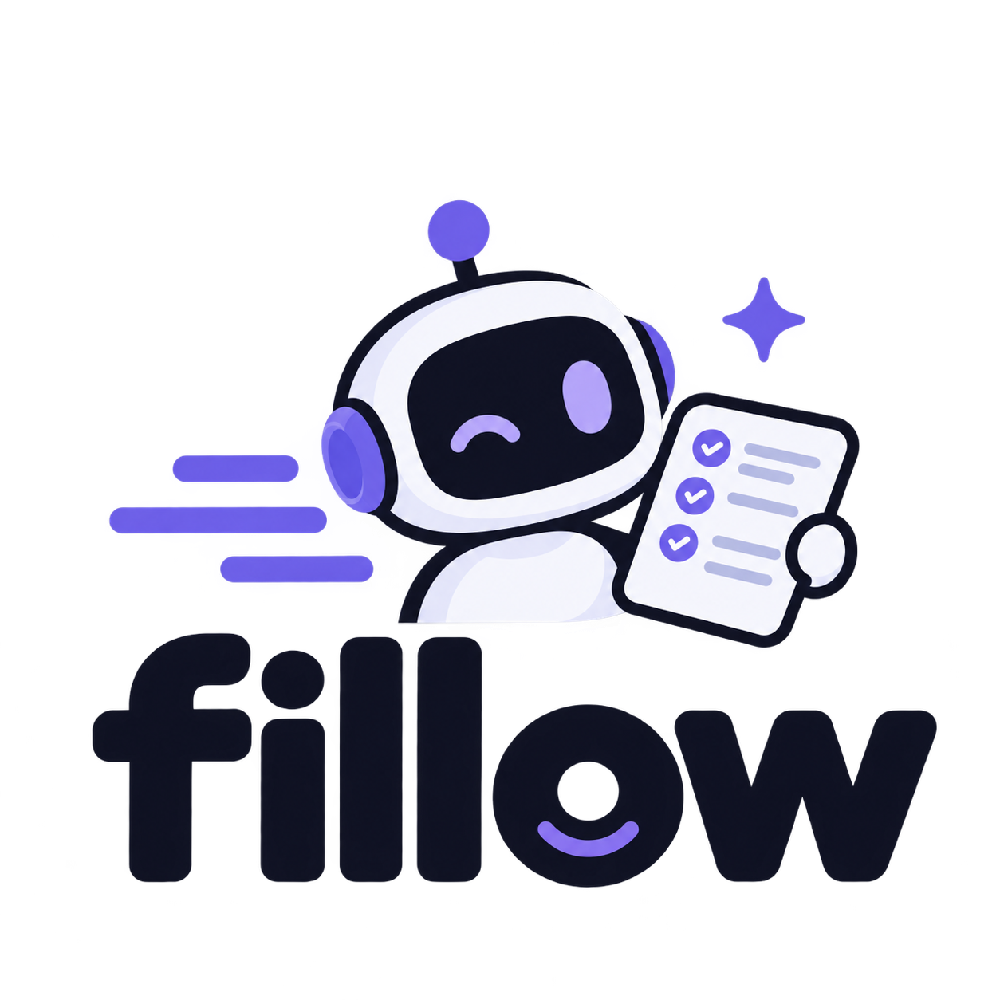

fillow is an agentic AI pipeline that discovers jobs on Ashby, Greenhouse, Lever & Workday, scores and tailors a one-page resume per posting, pre-fills ATS forms, and tracks everything — with safety gates a human would insist on. DRY_RUN until you say otherwise.
Four purpose-built agents. A failing board or job never blocks the batch.
Public ATS APIs (no tokens), liveness gate that never loses a real job to a bot-challenge, dedup, seed boards → data/jobs.tsv.
Heuristic score + legitimacy gate, then LLM-rewritten bullets into a one-page, Times New Roman, justified Jake's-format PDF per JD. Cached per job.
Playwright form fill with a layered answer engine (profile-locked facts → force-lists → claims → NIM). Gmail IMAP pulls one-time codes automatically.
Canonical markdown tracker, append-only status ledger, Gmail reply-watch, and a Cloudflare Workers + D1 dashboard you can share privately.
Hybrid by default: discovery scores free in GitHub Actions; PDFs, apply, and Gmail run on your machine.
Anti-spam pacing is a mitigation, not a setting.
Nothing is submitted until you have reviewed a run. review_mode fills the form and leaves the browser open.
Dead postings never cost evaluation time — and a bot challenge or 429 is never mistaken for "expired."
Reposts, stale postings, and suspicious patterns land as report-only. Never auto-submitted.
data/blacklist.md is a gate, not a score signal. Respected by discovery and apply alike.
From clone to first reviewed run.
git clone https://github.com/taksha17/fillow.git && cd fillow && npm installconfig/profile.example.yaml and .env.example, add your identity + NVIDIA_API_KEY (and Gmail app password for OTP).fillow auth prints a live matrix for NIM, Gmail, GitHub, LLM fallbacks, Cloudflare, and Supabase.fillow run with DRY_RUN=true. Review the tracker + dashboard, then flip the flag.npm run cf:setup → Workers + D1 hosted dashboard.| Lineage | career-ops (evaluation & tracking discipline) · Fillow v1 (the author's Python predecessor) |
| Agent 1 | GLM 5.3-flash — NVIDIA NIM + Qwen agent |
| Agent 2 | NVIDIA Nemotron 3 Ultra — Kilo AI + Claude Code agent |
| Agents 3 & 4 | Grok 4.6 — Cursor agent |
| PRD & architecture | GLM 5.3 — NVIDIA NIM + Claude Code agent |